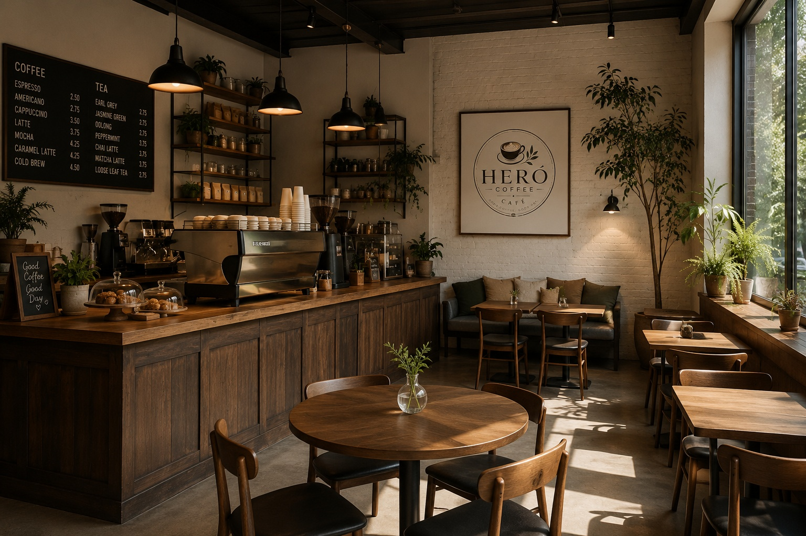

Our Story
From a weekend market stall to your favourite coffee spot
Fresh, Organic, and Community-loved
GreenLeaf Café was founded in 2020 by Mia and James, two friends who believed that healthy food should never sacrifice taste. What started as a weekend market stall has grown into a cozy Café where every cup of coffee is ethically sourced and every pastry is baked fresh daily.
We partner with local farmers to bring you the freshest ingredients - from organic oat milk to wild honey. Our mission is simple: serve delicious, planet- friendly food in a space where everyone feels welcome.
Come for the coffee, stay for the community.

Sustainability
Compostable cups, no plastic straws, and food waste donated to local farms.
Community
Free Wi-fi, board games, and weekly open mic nights.
Quality
Every drink handcrafted, every ingredient traceable.